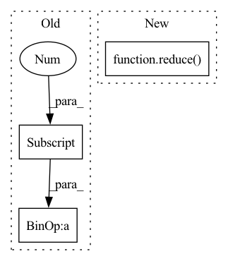

Pattern ID :35643
Before Change
MACs estimation for `torch.nn.Linear`
// batch size * out_chan * macs_per_elt (bias already counted in accumulation)
mm_mac = input.shape[0] * output.shape[1] * input.shape[1]
return mm_mac
After Change
MACs estimation for `torch.nn.Linear`
// batch size * out_chan * macs_per_elt (bias already counted in accumulation)
mm_mac = module.in_features * reduce( mul, output.shape)
return mm_mac
In pattern: SUPERPATTERN
Frequency: 3
Non-data size: 3
Instances Fragment ID: 101544137
Project Name: frgfm/torch-scan
Commit Name: 358edb6bc89f654d6b6dd476c282783d3db79cb0
Time: 2022-05-17
Author: 26927750+frgfm@users.noreply.github.com
File Name: torchscan/modules/macs.py
M Class Name: AnonimousClass
N Class Name: AnonimousClass
M Method Name: macs_linear(3)
N Method Name: macs_linear(3)
M Parent Class:
N Parent Class:
M File Name: torchscan/modules/macs.py
N File Name: torchscan/modules/macs.py
M Start Line: 60
M End Line: 60
N Start Line: 60
N End Line: 60
Before Change
self._bins_per_octave = bins_per_octave
self._resamplers = []
self._bounds = bounds
for i in range(bounds[0], bounds[1] + 1):
rate = 2.0 ** (-float(i) / bins_per_octave)
s1, s2 = int(sample_rate / rate), int(sample_rate)
self._resamplers.append(After Change
products = []
for i in range(1, len(factors) + 1):
products.extend(
[reduce( lambda x, y: x * y, x) for x in combinations(factors, i)]
)
for i in products:
for j in products: Fragment ID: 101544132
Project Name: kentonishi/torch-pitch-shift
Commit Name: 104442cf773ee57bcb8c4a0c5556f60c35cb7f37
Time: 2021-06-18
Author: kento24gs@outlook.com
File Name: torch_pitch_shift/main.py
M Class Name: PitchShifter
N Class Name: PitchShifter
M Method Name: __init__(3)
N Method Name: __init__(6)
M Parent Class:
N Parent Class:
M File Name: torch_pitch_shift/main.py
N File Name: torch_pitch_shift/main.py
M Start Line: 13
M End Line: 54
N Start Line: 16
N End Line: 45
Before Change
// batch size * out_chan * in_chan
mm_flops = inputs[0].shape[0] * module.out_features * (2 * module.in_features - 1)
bias_flops = inputs[0].shape[0] * module.out_features if module.bias is not None else 0
return mm_flops + bias_flops
After Change
FLOPs estimation for `torch.nn.Linear`
// batch size * out_chan * in_chan
num_out_feats = module.out_features * reduce( mul, inputs[0].shape[:-1])
mm_flops = num_out_feats * (2 * module.in_features - 1)
bias_flops = num_out_feats if module.bias is not None else 0
return mm_flops + bias_flops Fragment ID: 101544130
Project Name: frgfm/torch-scan
Commit Name: 358edb6bc89f654d6b6dd476c282783d3db79cb0
Time: 2022-05-17
Author: 26927750+frgfm@users.noreply.github.com
File Name: torchscan/modules/flops.py
M Class Name: AnonimousClass
N Class Name: AnonimousClass
M Method Name: flops_linear(2)
N Method Name: flops_linear(2)
M Parent Class:
N Parent Class:
M File Name: torchscan/modules/flops.py
N File Name: torchscan/modules/flops.py
M Start Line: 77
M End Line: 78
N Start Line: 77
N End Line: 79